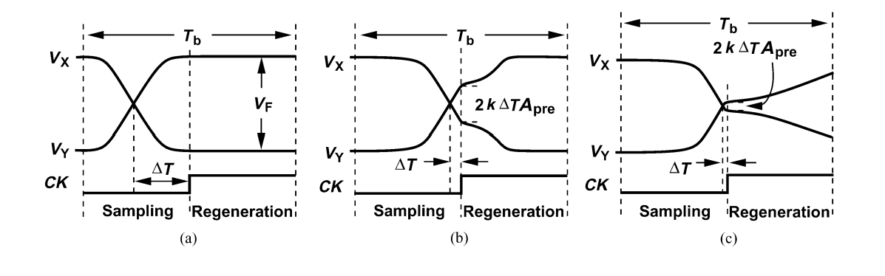
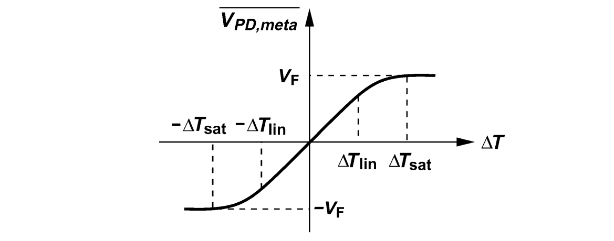
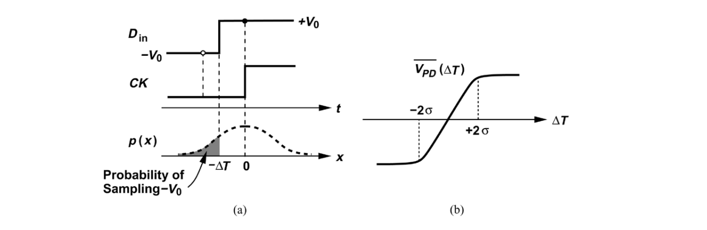
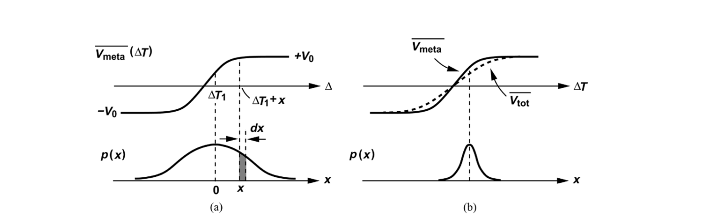

PD Metastability 對 PD 的線性化
一個理想的 Bang-Bang Phase Detector 在 Phase Error 趨近於 \(0^+\) 的時候會輸出 High，反之，在趨近於 \(0^-\) 的時候會輸出 Low，但 Phase Detector 本身的亞穩態會使得 BBPD 的 PD Curve 在 Phase Error 較小的時候，增益不是無窮大，也就是變得平緩。
Fig. 1 為一個傳統的 Latch 電路，當 \(CK\) 為 High 時，Latch 對 \(D_{in}\) 做 Sample，當 \(CK\) 為 Low 時，Latch 對輸出做 Regeneration。
根據 \(D_{in}\) 的 Zero Crossing 點和 \(CK\) 由 Low 轉 High 的時間差 \(\Delta T\) ，我們可以得到三種輸出時域圖 :
 Fig. 2. Three Cases of Latch OutputFig. 2 (a) 說明 \(D_{in}\) 在 Sampling 階段的準備時間夠長，使得 Latch 輸出可以飽和，使得在 Regeneration 階段時 Latch 的輸出不再變化。
\(V_F=I_{SS}R_C\)
Fig. 2 (b) 說明 \(D_{in}\) 在 Sampling 階段的準備時間不夠長，但 Latch 在 Regeneration 階段仍然有足夠的時間 (也就是半個 Clock Period) 可以讓輸出達到飽和電壓 \(V_F\) 。
我們假設 \(D_{in}\) 變化的斜率為 \(2k\)，Latch Sampling 階段的增益為 \(A_{pre}\)，則在 Sampling 結束時刻的輸出為 :
\(2k\Delta TA_{pre}\)
Fig. 3 (c) 說明 \(D_{in}\) 在 Sampling 階段的準備時間不夠長，Regeneration 階段也沒有足夠的時間讓輸出飽和至 \(V_F\)，若 Regeneration 的 Time Constant 為 \(\tau_{reg}\)，則此時最終的輸出電壓為 :
\(2k\Delta TA_{pre}e^{\frac{T_b/2}{\tau_{reg}}}\)
由於 Latch (或者 PD) 的平均輸出為 \(V_X-V_Y\) 在 Regeneration 下的平均電壓除以一個 Clock Period，我們可以得到 Fig. 2 (c) 的 PD 平均輸出電壓和 \(\Delta T\) 的關係 \(\overline{V_{PD,meta}}(\Delta T)\) :
\(\overline{V_{PD,meta}}(\Delta T)=\frac{1}{T_b}\int_{0}^{T_b/2}2k\Delta TA_{pre}e^{\frac{t}{\tau_{reg}}}dt\)
\(\overline{V_{PD,meta}}(\Delta T)\approx 2k\Delta TA_{pre}\frac{\tau_{reg}}{T_b}e^{\frac{T_b}{2\tau_{reg}}}\propto \Delta T\)
我們得到一個結論: \(\overline{V_{PD,meta}}(\Delta T)\propto \Delta T\) 。
當 \(\Delta T\) 逐漸變大的時候，Fig. 2 (c) 的最終值會變大，並且當最終值等於 \(V_F\) 的時候，Fig. 2 (c) 將轉變成 Fig. 2 (b)，此刻為 PD Curve 不再線性的位置，我們定義為 \(\Delta T_{lin}\) :
\(2k\Delta T_{lin}A_{pre}e^{\frac{T_b}{2\tau_{reg}}}=V_F\)
\(\Delta T_{lin}=\frac{V_F}{2k\Delta T_{lin}A_{pre}e^{\frac{T_b}{2\tau_{reg}}}}\)
\(\overline{V_{PD,meta}}(\Delta T)\) 飽和的時刻為 Fig. 2 (b) 轉變為 Fig. 2 (a) 的時刻，我們定義為 \(\Delta T_{sat}\) :
\(\Delta T_{sat}=\frac{V_F}{2kA_{pre}}\)
綜合上述分析，我們可以繪製出 Fig. 3。
 Fig. 3. Typical Bang-Bang CharacteristicJitter 對 PD 的線性化
輸入訊號 \(D_{in}\) 和震盪器輸出 \(CK\) 上的 Jitter 也會使得 PD Curver 變得平緩。
 Fig. 4. Smoothing of PD Characteristic due to JitterFig. 4 (a) 中表示，有一訊號 \(D_{in}\) 在 \(CK\) Sampling 結束前的 \(\Delta T\) 時刻就到來了，在理想情況下，PD 應該正確取得 \(D_{in}\) 的資料，但由於 \(CK\) 上搭載著 Normal Distribution Jitter 的關係，PD 有一定的機率 (灰色區間) 判斷到錯誤的 \(D_{in}\)。
我們假設 Jitter 的 Probability Density Function (PDF) 為 \(p(x)\) 且左右對稱，則可以計算平均的 PD 輸出與 Phase Error \(\Delta T\) 的關係 \(\overline{V_{PD}}(\Delta T)\) :
\( \overline{V_{PD}}(\Delta T)=-V_0\int_{+\Delta T}^{+\infty}p(x)dx+V_0\int_{-\infty}^{+\Delta T}p(x)dx \)
假設 Jitter 的 PDF 呈現 Gaussian Disstribution，標準差為 \(\sigma\)，則如 Fig. 4 (b) 中所表示，此 BBPD 的線性區間為 :
\(|\Delta T|<2\sigma\)
Metastibility 和 Jitter 共同對 PD 的線性化
 Fig. 4. Total Characteristic我們考慮 Phase Error 為 \(\Delta T_1\) 時，PD 的輸出為 \(\overline{V_{tot}}(\Delta T_1)\)。
\(\overline{V_{tot}}(\Delta T_1)=\int_{-\infty}^{+\infty}\overline{V_{meta}}(\Delta T_1+x)p(x)dx\)
若 Jitter 的 PDF 為左右對稱，即 \(p(x)=p(-x)\)，則 \(\overline{V_{tot}}(\Delta T_1)\) 可化簡為 :
\(\overline{V_{tot}}(\Delta T_1)=\int_{-\infty}^{+\infty}\overline{V_{meta}}(\Delta T_1-u)p(u)du\)
\(\overline{V_{tot}}(\Delta T)\) 即為 \(\overline{V_{meta}}(\Delta T)\) 和 \(p(x)\) 的 convolution。
\(\overline{V_{tot}}(\Delta T)=\overline{V_{meta}}(\Delta T)*p(x)\)
這使得 PD Curve 的線性區間從遠本的 \(\Delta T_{lin}\) 被額外拓展了 \(2\sigma\)。
References: Analysis and Modeling of Bang-Bang Clock and Data Recovery Circuits, JSSC, 2004